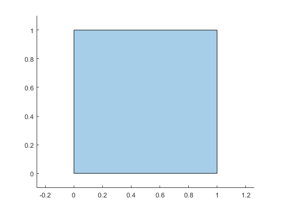

polyshape
2-D polygonal shapes
Description
The polyshape function creates polygon-like shapes from 2-D
vertices. However, unlike polygons, a polyshape can have
discontiguous regions and holes. The properties of a polyshape object
describe its vertices, solid regions, and holes.
For example, pgon = polyshape([0 0 1 1],[1 0 0 1]) creates the
solid square defined by the four points (0,1), (0,0), (1,0), and (1,1).
>> pgon = polyshape([0 0 1 1],[1 0 0 1])
pgon =
polyshape with properties:
Vertices: [4×2 double]
NumRegions: 1
NumHoles: 0>> plot(pgon)

Creation
When creating a polyshape object, the input vertices should define
one or more boundaries of a polygon that have no intersections and are properly nested.
Otherwise, the polyshape function automatically alters the input
vertices as needed to create a well-defined polygon.
If you want to create a regular polygon, you can also use the nsidedpoly function. nsidedpoly enables you to
optionally specify parameters such as the center point and side length of the
polygon.
Syntax
Description
pgon = polyshape() creates an empty
polyshape object.
pgon = polyshape( creates a
P)polyshape from the 2-D vertices defined in the
N-by-2 matrix P, where
N is the number of vertices. The first column of
P defines the x-coordinates, and the
second column defines the y-coordinates.
pgon = polyshape(___,
specifies additional parameters for creating a Name,Value)polyshape
object for any of the previous syntaxes.
Input Arguments
Name-Value Arguments
Properties
Object Functions
Examples
Create and plot a polygon made up of four points, and compute its area, perimeter, and centroid coordinates.
pgon = polyshape([0 0 1 3], [0 3 3 0]); plot(pgon)

A = area(pgon)
A = 6
P = perimeter(pgon)
P = 10.6056
[Cx Cy] = centroid(pgon)
Cx = 1.0833
Cy = 1.2500
Analyze a polygon with intersecting boundaries.
Create a polygon whose boundary contains a self-intersection. By default, the polyshape function splits the boundary into two distinct boundaries in order to create a well-defined polygon.
P = [0 0; 1 1; 1 0; 0 1; 0 0]; pgon = polyshape(P)
Warning: Polyshape has duplicate vertices, intersections, or other inconsistencies that may produce inaccurate or unexpected results. Input data has been modified to create a well-defined polyshape.
pgon =
polyshape with properties:
Vertices: [7×2 double]
NumRegions: 2
NumHoles: 0
Plot the polygon and compute its area.
plot(pgon)

A = area(pgon)
A = 0.5000
If you do not simplify the original input vertices, the areas of the two triangular regions of the polygon cancel each other out.
pgon2 = polyshape(P,'Simplify',false)pgon2 =
polyshape with properties:
Vertices: [4×2 double]
NumRegions: 1
NumHoles: 0
A2 = area(pgon2)
A2 = 0
Analyze polygons with nested boundaries.
Create a polygon with two properly nested boundaries. polyshape defines the outermost boundary as the exterior bound of a solid region. Working inward, the next boundary defines the start of a hole.
t = 0.05:0.5:2*pi;
x1 = cos(t);
y1 = sin(t);
x2 = 0.5*cos(t);
y2 = 0.5*sin(t);
pgon = polyshape({x1,x2},{y1,y2})pgon =
polyshape with properties:
Vertices: [27×2 double]
NumRegions: 1
NumHoles: 1
plot(pgon)

Use the addboundary function to create a second polygon that adds a third, outer boundary to pgon.
x3 = 2*cos(t); y3 = 2*sin(t); pgon2 = addboundary(pgon,x3,y3)
pgon2 =
polyshape with properties:
Vertices: [41×2 double]
NumRegions: 2
NumHoles: 1
plot(pgon2)

Adding a third, outer boundary requires polyshape to reorganize the solid and hole boundaries based on the new nesting pattern. Again, polyshape starts with the outermost boundary that indicates the start of a solid region, then alternates between hole and solid with each nested boundary, working inward. The new polygon now has two solid regions and one hole.